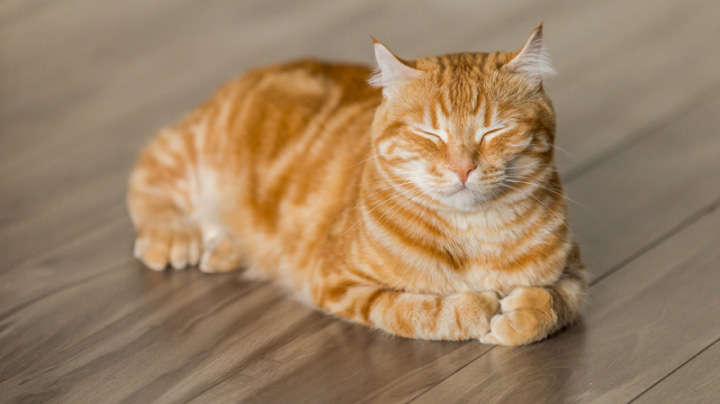

They recognize when the owner is sad
A cat can use its seventh sense to sense when its owner is sad, depressed, afraid, etc. Then the cat responds by amplifying his communication signals, for example by snuggling more vigorously or meowing loudly.
They teach the child the values of compassion
It is in nature for most dogs to like to be "bothered" and hunted, and tolerate moderate roughness. Cats, on the other hand, don't like it. If you treat a cat roughly, it will run away and stop interacting with humans. In this way, the child learns the difference between tougher, more tolerant pets, such as dogs, and those that require more careful, gentle handling, such as cats.